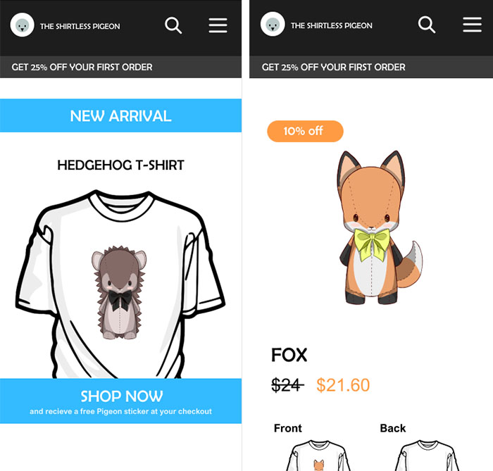

Tilbage
Ux
I tema 3: Grundlæggende UX lærte vi om konventioner, indholdskompenter, copying, microcopying, prototyper og research metoder. Desuden lærte vi at bruge Adobe XD's prototype funktion.
Igennem dette tema skulle vi udarbejde en prototype af en t-shirt hjemmeside ud fra forskellige slags research såsom observationer og interviews.
Mit "site" The Shirtless Pigeon har en duemaskot, der viser vej og integrerer med brugeren. Den skal være medvirkende til at gøre det sjovt at shoppe t-shirts. I den forbindelse har jeg derfor også valgt, at holde prototypen i stærke og tydelige farver - nemlig udelukkende blå og orange, som står i stor kontrast til hinanden og derfor skaber en god balance.
